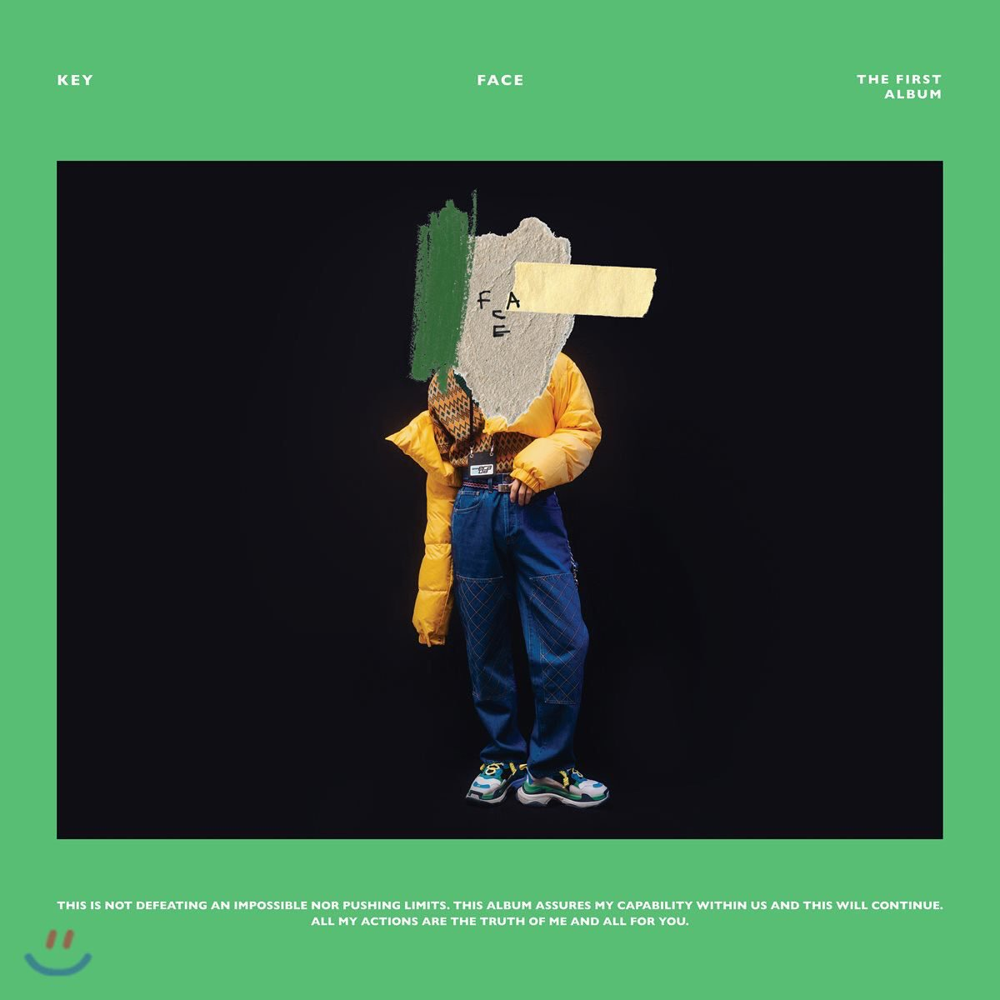
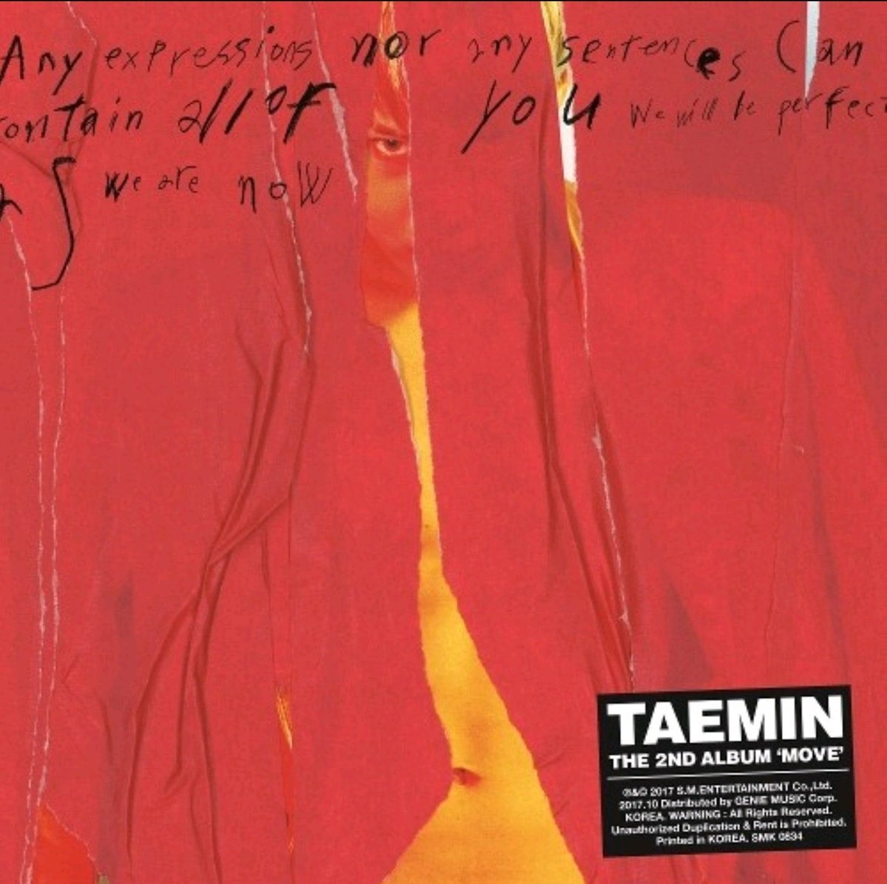
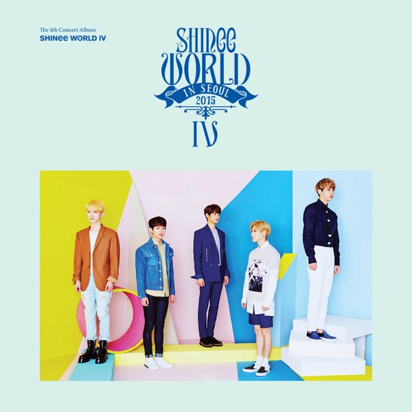

Referências
Nós da SHINee Store separamos também um pouco do trabalho solo de alguns membros do SHINee, além de outros conteúdos a parte. Veja a seguir:
She Is
She Is é o primeiro álbum de estúdio de Jonghyun, lançado em 24 de maio de 2016. Possuindo elementos de gêneros como Rhythm and blues, dance music, Soul e Dance-pop, o álbum conta com uma faixa principal homônima e outras 8 canções, todas escritas por Jonghyun.
Face
Face é o primeiro álbum de estúdio de Key, lançado em 26 de novembro de 2018. "One of Those Nights (feat. Crush)" e "Forever Yours (feat. Soyou)" serviram como os singles principais do álbum.
Move
Move é o segundo álbum de estúdio de Taemin. O álbum foi lançado em 16 de outubro de 2017, juntamente com o single "Move", uma canção de R&B com um som de baixo impressionante e um ritmo de canto que chama a atenção do ouvinte.
SHINee World IV
SHINee World IV é o dvd da quarta turnê do quinteto, que ocorreu entre maio e outubro de 2015. Neste dvd, SHINee trouxe consigo performances refrescantes e poderosas de várias de suas canções.